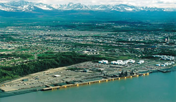

Welcome to Caitlin's Travel Log: Alaska
CAPITAL: Juneau.
Information:
The U.S. bought Alaska from Russia in October 1867 for 7.2 million dollars, or two cents per acre. Many Americans thought this was a waste of money and called Alaska "Sewards Folly," after Secretary of State William H. Seward who championed the purchase.
Alaska longest river, the Yukon, runs2,300 Miles, 1,400 in Alaska and 900 in Canada. There are more than 3,000 rivers in Alaska and over 3 million lakes. The largest, Lake Iliamna, encompasses over 1,000 square miles. Each year Alaska has approximately 5,000 earthquakes, including 1,000 that measure above 3.5 on the Richter scale. Of the ten strongest earthquakes ever recorded in the world, three have occurred in Alaska. Of the nation's 20 highest mountains, 17 are in Alaska. Mount McKinley ( 20,320 feet ) in the Alaska Range is the highest in North America.
Anchorage, Alaska:
Among the northernmost cities on Earth, Anchorage is a place with big-city amenities: fine restaurants, museums, theaters and an excellent music scene. Creating the backdrop are the salmon-rich waters of Cook Inlet and the 5,000-foot-plus peaks of Chugach State Park. Within a short drive from downtown are dozens of wilderness adventures and a short plane ride opens up the possibility of almost any type adventure. That’s one reason why Anchorage’s Lake Hood is the world’s busiest floatplane base. Anchorage’s 284,994 residents embrace both the urban amenities and the wilderness beyond it.
Things to do
Anchorage features dozens of parks and 122 miles of paved bike paths. Warmed by a maritime climate, you can spend the day fishing Ship Creek downtown, hiking the nearby mountains, photographing glaciers and dining at a four-star restaurant. Within a 15-minute drive from downtown is the tree-lined trailhead of Anchorage’s most popular hike, Flattop Mountain. In winter, the city transforms into fluffy white playground, with 130 kilometers of maintained Nordic ski trails, dog sledding, ice skating, snowmobiling, ice sculptures and more. Just 45 minutes away is Alaska’s premier alpine ski resort, Alyeska Resort.

Getting here and around
Anchorage technically stretches across 1,955 square miles, from the Alaska Native village of Eklutna all the way to Portage Glacier south of town. Anchorage’s Ted Stevens Anchorage International Airport is the state’s main air hub, and it’s no stretch to say all roads (in Alaska anyway) lead to Anchorage as well. Paved highways accessible from Anchorage connect to places like Fairbanks, Valdez, the Kenai Peninsula, Denali National Park and Preserve and Wrangell-St. Elias National Park and Preserve. The Alaska Railroad’s main passenger depot is located in Anchorage and runs from Seward to Fairbanks.
History
Anchorage wasn’t officially founded until 1915, even though British explorer Captain James Cook sailed past the site in 1779 and gold prospectors discovered the bounty of Ship Creek in the late 1800s. It wasn’t until the Alaska Railroad set up a construction camp in 1915 that Anchorage was established and became a booming tent city of 2,000 people. Anchorage proved to be the ideal center for Alaska's rail, air and highway systems with the military build up of World War II and the discovery of oil in Cook Inlet in the 1950s, adding to its steady growth. After the 1964 Good Friday Earthquake, the city was rebuilding itself when another opportunity arose: the discovery of a $10-billion oil reserve in Prudhoe Bay. Though the Trans-Alaska Pipeline doesn't come within 185 miles of Anchorage, the city became the headquarters of various petroleum and service companies.
©Caitlin Bero 2015 |